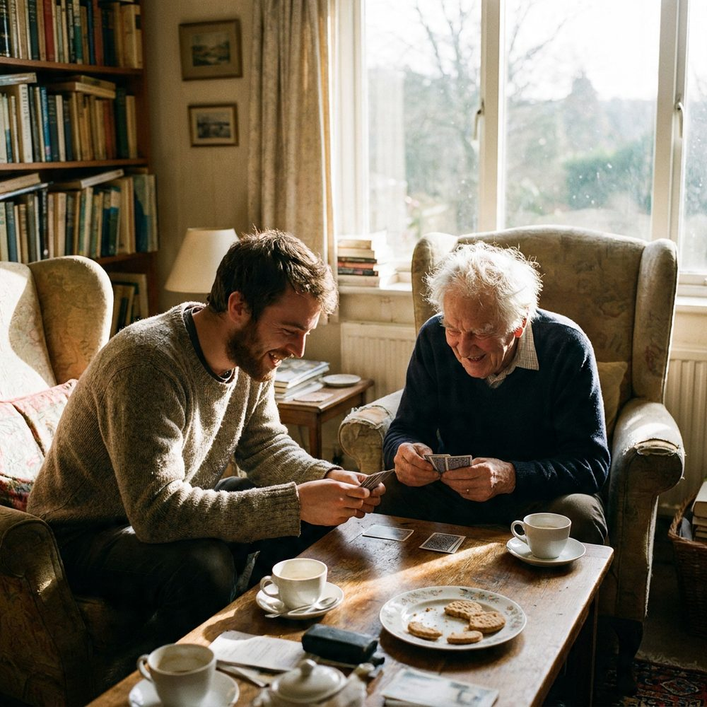
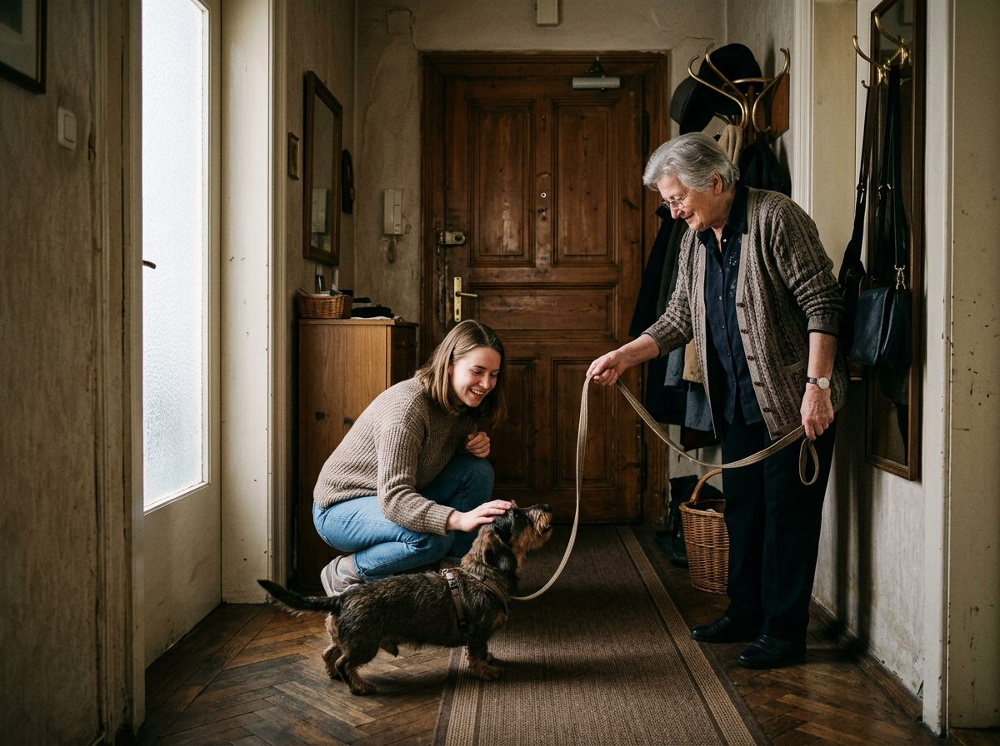
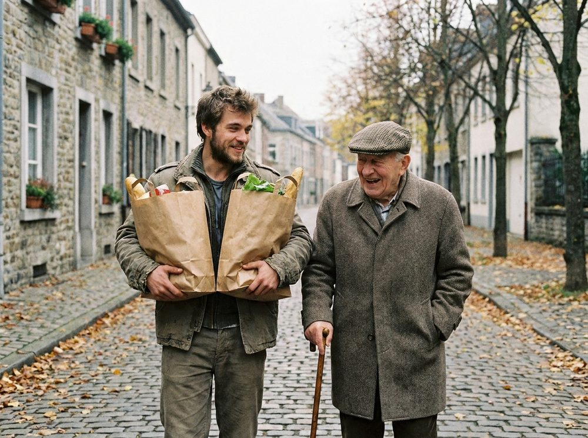

Alltagshilfe von Jung für Alt.
Junge, angestellte Helfer:innen kommen regelmäßig zu Ihren Eltern oder Großeltern: einkaufen, kochen, begleiten, zuhören. Und weil ein gutes Enkerl auch auf die Kleinen und den Hund schaut, jetzt auch für Kinder und Haustiere.
- Feste Bezugsperson
- Angestellte, geprüfte Helfer:innen
- Rückmeldung nach jedem Besuch
- Jederzeit kündbar
Was ein gutes Enkerl eben so macht.
Wir übernehmen die Dinge, die im Alltag schwerer fallen oder für die schlicht die Zeit fehlt. Keine medizinische Pflege, dafür Zeit, Verlässlichkeit und ein Gesicht, das man kennt.
Für Eltern und Großeltern
Damit das Leben in den eigenen vier Wänden länger gut gelingt. Regelmäßig, mit derselben Person.

Für Kinder Neu
Wenn Kindergarten, Schule und Arbeitszeiten nicht zusammenpassen, springt ein Enkerl ein. Verlässlich, und beim nächsten Mal wieder dieselbe Person.
Für Haustiere Neu
Der Hund braucht seine Runde, auch wenn die Hüfte nicht mehr mitspielt oder der Urlaub ansteht. Das Tier bleibt daheim, wir kommen vorbei.

Was wir bewusst nicht tun
Keine medizinische Pflege, keine Medikamentengabe, kein Heben oder Stützen. Wer das braucht, bekommt von uns eine ehrliche Auskunft und die Empfehlung eines geprüften Pflegepartners. Diese Grenze schützt Ihre Angehörigen und unsere Helfer:innen.
Sie erfahren nach jedem Besuch, wie es war.
Die meisten Familien, die uns anrufen, wohnen nicht um die Ecke. Deshalb schreibt Ihre Helfer:in nach jedem Besuch eine kurze Nachricht an die Person, die Sie dafür bestimmen. Nicht lang, aber konkret. Was erledigt wurde, was aufgefallen ist, wann der nächste Termin ist.
Was Ihre Mutter oder Ihr Vater dabei nicht weitergegeben haben möchte, bleibt in der Wohnung. Die Rückmeldung gibt es nur mit ihrem Einverständnis.
So kommt ein Enkerl zu Ihnen.
-
1
Erstgespräch
Am Telefon oder bei Ihnen daheim. Wir klären, was gebraucht wird, wie oft, und was es kostet. Kostenlos und unverbindlich.
-
2
Kennenlernen
Sie lernen Ihre feste Helfer:in vorab kennen, mit Name und Foto. Ein Probetermin gehört dazu. Passt es nicht, suchen wir jemand anderen.
-
3
Regelmäßige Besuche
Fixe Zeiten, dieselbe Person. Muss sie einmal vertreten werden, sagen wir das immer vorher, mit Namen.
-
4
Rückmeldung
Nach jedem Besuch eine kurze Nachricht an die Familie. Und eine erreichbare Ansprechperson bei uns, wenn etwas nicht passt.

Warum Familien uns den Wohnungsschlüssel anvertrauen.
Wir bringen einen fremden jungen Menschen in die Wohnung Ihrer Eltern. Das ist eine große Sache, und wir behandeln es auch so. Deshalb behaupten wir Vertrauen nicht, sondern zeigen, wie wir es absichern.
- Angestellt, nicht vermitteltUnsere Helfer:innen sind bei Enkerl angestellt und versichert. Keine Plattform, keine Scheinselbstständigkeit.
- Geprüft vor dem ersten EinsatzAusweis, Strafregisterbescheinigung, Referenz und persönliches Gespräch. Dann eine Einschulung, bevor jemand zu Ihnen kommt.
- Enkerl-Ausweis an der TürJede Helfer:in zeigt unaufgefordert ihren Ausweis mit Foto. Wer nicht angekündigt ist, kommt nicht rein.
- Bargeld nur gegen BelegJeder Einkauf wird mit Kassenbon dokumentiert, das Wechselgeld kommt vollständig zurück. Eine Bankomatkarte nehmen wir grundsätzlich nicht an.
- Klare RegelnKeine Geschenke, keine privaten Geldgeschäfte, Verschwiegenheit über alles, was in der Wohnung passiert. Das steht im Arbeitsvertrag.
- Jederzeit kündbarKein Knebelvertrag, keine Mindestlaufzeit. Wenn es nicht passt, hören wir auf.
Abgerechnet wird nach tatsächlich geleisteten Stunden, ohne Mindestlaufzeit und ohne versteckte Kosten. Der Richtwert gilt für Alltagshilfe, Kinderbetreuung und Tierbetreuung gleichermaßen.
Ob in Ihrem Fall Pflegegeld, eine Zuwendung zur Ersatzpflege oder eine steuerliche Absetzbarkeit infrage kommen, hängt von Ihrer Situation ab. Wir gehen das im Erstgespräch ehrlich mit Ihnen durch und sagen auch, wenn es nicht passt.
Kostenloses Erstgespräch vereinbarenWas Familien uns vor dem ersten Besuch fragen.
Wer kommt zu meiner Mutter?
Eine feste Bezugsperson, die Sie und Ihre Mutter vorab kennenlernen, mit Name und Foto. Diese Person bleibt dieselbe. Bei Krankheit oder Urlaub kündigen wir die Vertretung immer vorher an. Sie können auch angeben, ob Ihnen eine Helferin oder ein Helfer lieber ist.
Was macht ihr, wenn etwas Medizinisches gebraucht wird?
Wir sagen es ehrlich und vermitteln an einen geprüften mobilen Pflegedienst. Unsere Helfer:innen erinnern gern an die Tablette um zwölf, aber sie richten und verabreichen keine Medikamente. Im Notfall gilt: Rettung 144, dann Sie.
Ab welchem Alter betreut ihr Kinder?
Wir betreuen Kinder ab dem Kindergartenalter: abholen, Hausaufgaben, Nachmittage und Abende zu Hause. Alle Helfer:innen, die zu Kindern kommen, haben eine aktuelle Strafregisterbescheinigung vorgelegt und die Einschulung durchlaufen. Was Ihr Kind braucht und wie Ihr Alltag aussieht, besprechen wir im Erstgespräch.
Welche Tiere betreut ihr?
Hunde, Katzen und Kleintiere, jeweils bei Ihnen zu Hause. Beim Kennenlernen schauen wir, ob Tier und Helfer:in zusammenpassen. Bei Hunden, die schwer zu führen sind, sagen wir lieber ehrlich ab, als ein Risiko einzugehen.
Wie schnell kann jemand kommen?
Enkerl ist auf regelmäßige, geplante Hilfe ausgelegt, nicht auf Notfalleinsätze. Je nach Grätzl und Wunschzeit dauert es vom Erstgespräch bis zum ersten Besuch meist ein bis zwei Wochen. Wir sagen Ihnen im Gespräch, was realistisch ist.
Was ist, wenn etwas kaputtgeht oder verschwindet?
Versehen passieren, und dafür sind wir versichert. Jeden Verdacht nehmen wir ernst: Es gibt eine feste Ansprechperson, dokumentierte Einsätze und Belege für jeden Einkauf. Schlüssel, Bargeld und Wertsachen laufen bei uns nach dem Vier-Augen-Prinzip.
Kann ich jederzeit kündigen?
Ja. Keine Mindestlaufzeit, keine Kündigungsfrist, die Sie über Monate bindet. Sie sollen bleiben, weil es gut läuft, nicht weil es im Vertrag steht.
Ein Nebenjob, von dem du abends erzählst.
Du studierst, bist zwischen zwei Jobs oder willst neben der Arbeit etwas machen, das zählt. Bei Enkerl bekommst du eine Familie, die auf dich wartet, und einen Chef, der dich anstellt statt vermittelt.
- Du wählst deine Dienstzeiten selbst, deine Leute bleiben trotzdem dieselben.
- Echte Anstellung mit Versicherung, keine Selbstständigkeit auf Papier.
- Einschulung vor dem ersten Einsatz und jemand, den du immer anrufen kannst.
- Faire Bezahlung, pünktlich am Monatsende.
Kostenloses Erstgespräch.
Schreiben Sie uns kurz, worum es geht. Wir melden uns innerhalb eines Werktags, gern auch telefonisch.
Danke, Ihre Nachricht ist angekommen. Wir melden uns innerhalb eines Werktags bei Ihnen.